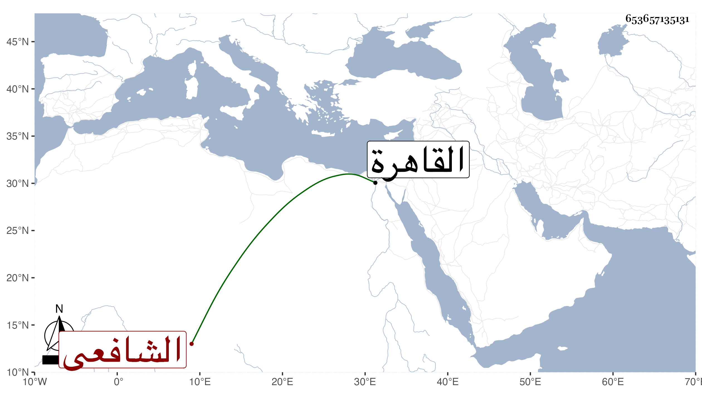

0902Sakhawi.DawLamic.ITO20230111-ara1.EIS1600.653657135131
Biography ID: 653657135131
حسين بن محمد بن محمد بن محمد بن محمد بن محمد بن محمود عفيف الدين أبو الطيب بن أثير الدين بن المحب الحلبى الشافعى أخو أحمد ومحمد ويعرف كسلفه بابن الشحنة . ولد ونشأ فحفظ القرآن والمنهاج وغيره ، وسمع من جده وغيره وقدم القاهرة غير مرة منها بعد موت جده على عمه عبد البر ثم عاد في جمادى الثانية سنة تسعين ثم قدم أيضا بعد موت أخيه فأمر السلطان بنفيه إلى ألواح وتوجه فأقام بها إلى أن شفع فيه وعاد ، ويقال إنه اشتغل هنا عند البرهان ابن أبي شريف والبقاعي وهناك عند عبد القادر بن يوسف الكردي في الفقه وقل درويش في المعقول وخطب بالجامع الكبير ، ومع كثرة اشتغاله فهو جامد وله اعتناء بالخيول وباسمه جهات
